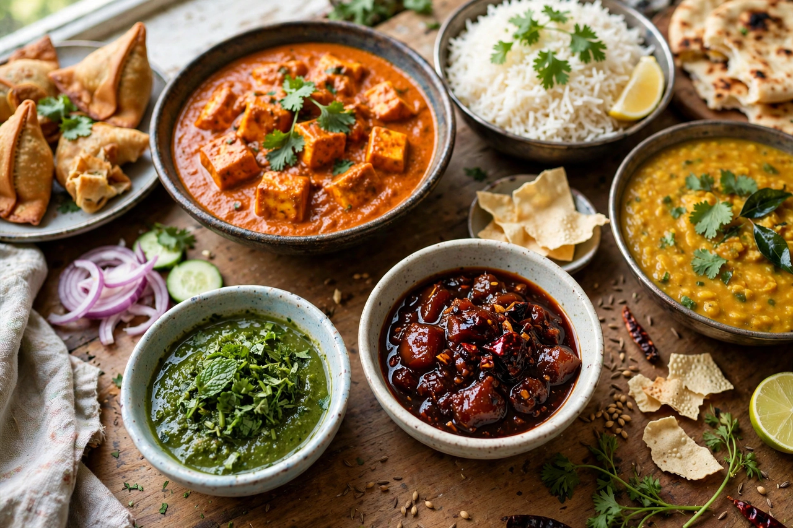

Chutney

Origin: Indian subcontinent
Type: Condiment
Main ingredients: Fruit or vegetables, vinegar, sugar, spices
A chutney (Hindi: चटनी, caṭnī, from a word meaning "to lick" or "to taste") is a family of condiments originating from the Indian subcontinent. Chutneys may be freshly ground pastes of herbs, coconut or vegetables, or long-cooked, sweet-and-sour preserves of fruit with vinegar, sugar and spices. They are served in small quantities as accompaniments to meals, snacks and curries.
Varieties
Fresh chutneys include green mint-and-coriander chutney, coconut chutney served with dosa and idli in South India, tomato chutney, and peanut chutney. Preserved chutneys, developed partly under British influence during the colonial period, include mango chutney, tamarind chutney, lime pickle-style chutneys, and Anglo-Indian products such as Major Grey's chutney. The word was also borrowed for sweet preserves made in Britain and its former colonies, such as apple or marrow chutney served with cheese and cold meats.
Preparation
Fresh chutneys are ground — traditionally on a stone, now usually in a blender — from raw ingredients with salt, chilli and acid such as lemon juice or tamarind. Cooked chutneys are simmered until thick and jam-like; vinegar and sugar act as preservatives, and mustard seeds, cumin, fenugreek and dried chillies are common seasonings, often tempered in hot oil.